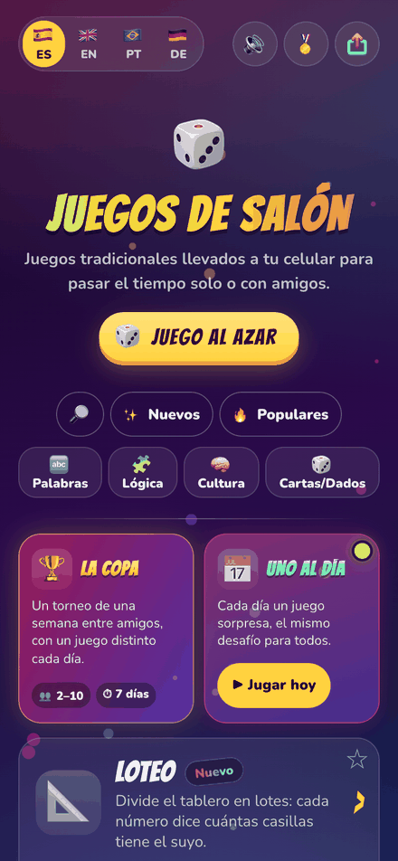
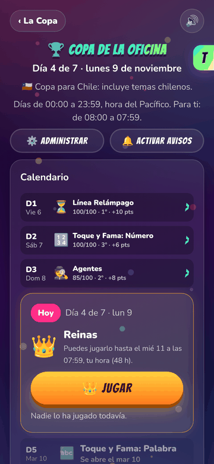
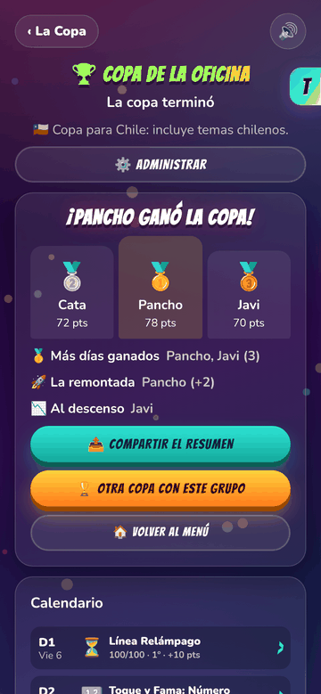

A side project · September to November 2026
Juegos de Salón
A party-games site for friends, built and run by one product lead and a team of AI agents. I don't write the code: I set the direction, make the calls and design the system that builds, tests and ships it.
The product
Open it on a phone, play with friends
- 🏆 The Cup. A week-long tournament for a group of friends: one short game a day, the same for everyone, a live leaderboard and a podium on Sunday.
- 📅 One a Day. A surprise challenge every day, with streaks and a monthly season.
- 🎲 Classic table games. Liar's Dice, Generala, Battleship, Hangman… one phone passed around, or each player on their own.
- 🌎 Spanish, English, Portuguese. Adapted, not translated. Works offline, installs like an app.



How it's built
I run the factory, not the keyboard
- 💡I decideAn idea, a player's report or an agent's proposal becomes a written decision. Most are one tap on my phone.
- 🤖Sessions buildSeveral Claude Code sessions work in parallel, each in its own copy of the code.
- 🧪Checks gateEvery change runs the tests and real-browser scripts. Red never merges.
- 👀Agents reviewUsability and documentation agents review each change, sized by its risk.
- 🚀It shipsLow-risk changes merge on their own. New features sit behind a switch until I flip it.
How it grew
Nine weeks, one step at a time
Nothing was planned as a system. Each step fixed the bottleneck of the week.
- One card gamePlain HTML, no framework, no build step.
- Parallel sessions + first agentEach AI session in its own copy; a usability reviewer.
- Auto-mergeTests decide, not me. End-to-end scripts required.
- A boss agent + one-tap decisionsMy attention became the constraint, so it got designed for.
- Everything behind the labNew work ships dark; I turn it on for players with a switch.
- Runs while I sleepDaily rounds headless on a Mac mini.
- Risk lanesReview depth set by what a mistake would cost.
- No rule without enforcementEvery rule is a test, a ratchet or a named reviewer.
Learnings of building Juegos de Salón
What I'd tell a company adopting AI
-
The job moves from doing to deciding
The AI writes the code; the value I add is the call: what, why, and what "good" means. I've written 550+ decisions, each with its reason.
Say: "The repo is the memory, not the chat. A new session reads the rules and picks up where the last one left."
-
Attention is the scarce resource. Design for it
Agents could produce more than I could review. So every question to me is a one-tap choice on my phone, with a recommendation.
Say: "If the human is the bottleneck, make the human's decisions cheap, not fewer."
-
Review by the cost of a mistake, not the AI's confidence
A text tweak merges on its own. Anything touching privacy, stored data or emails waits for my explicit Yes.
Say: "Green, yellow, red lanes. The AI never decides how sure it is; the file decides how risky it is."
-
The same mistake twice becomes a mechanism
An AI repeats errors happily. The second time something breaks, the fix ships with the test that stops a third.
Say: "370 test suites, many born from a real bug. Quality is a system, not a promise."
-
Production is a switch, not a deploy
Everything new ships hidden behind a lab flag. Launching is me flipping it on; rolling back is flipping it off.
Say: "Speed without fear comes from making every release reversible."
-
Parallel AI needs the plumbing of a parallel team
Several sessions at once collided on the same shared files. The fixes were classic team tools: own branches, reserved numbers, one changelog file per change.
Say: "Agents don't remove coordination problems; they reach them faster."
-
Give agents a boss and narrow powers
Each agent has one job and only the access that job needs. The one that reads strangers' emails can't touch code, git or keys.
Say: "Least privilege, applied to AI, just like to people."
-
Context is a budget
The rulebook every session loaded grew to 35 KB and slowed all of them. I cut it to an 8 KB index; the detail is read only when a task needs it.
Say: "Documentation for AI follows the same rule as for people: shorter, findable, one place per fact."
-
Evals start by writing down what humans already do
To let an AI judge game content, I first had to state the rule I was applying by eye. Then my judgement moved the rule in ways the eval couldn't.
Say: "The human in the loop isn't for checking; it's for generalising."
-
Keep the cost per use at zero
AI runs in the factory, at build time, on a flat plan. Nothing a player does costs money, so growth is never a risk.
Say: "Put the model where the cost is fixed, and ship its output as plain data."
Try it now
juegosdesalon.clFree · no account · Spanish, English and Portuguese